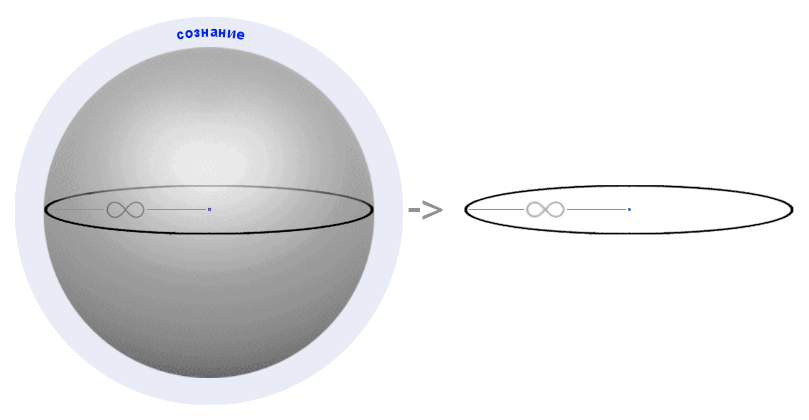

полный текст книги:
Ничто и Точка (предисловие)
Цель
Созерцаемое
Сущность
Сознание
Двухаспектная Сущность
Четвертое измерение и ...
Общество и Человечество
Пятое измерение и ...
Первовозникновение
Акт "Я"
Процесс изучения Акта "Я"
Смысл Бытия
Развитие Сущности
Коллективная реальность
Система развития Сущности
Эхо (отражение)
Реальный аспект Глоб. "Я"
О мировоззрении
Пространство-время
Осношение к Себе
Отношение к своему телу
Лень
Страх
Надежда (Ожидание Чуда)
Адаптация
Тождество личности
Отношение [Рассудок|Тело]
Свобода Воли
Трудная проблема Сознания
Неразличимость и идентичн.
Материя
Гносеология
Эпистемология
Разделение
на главную страницу сайта
— глава пятая —
————————————————————————————
————————————————————————————
СОЗНАНИЕ
Мы привыкли судить об Этом довольно своеобразно, и всегда подразумевали «Сознание» тем, что считалось внутренней функциональной деятельностью головного мозга – происходящими в нем, чувственными, психическими, но химическими по своей физической природе, процессами. Многие пытливые люди подозревают, что это не совсем так как считалось, и не очень просто для понимания в силу необычности. Но, Истина, которая уже известна, не изменится от нашего отношения к Ней, и не прогнется под индивидуальные странности характера;
Фундаментальным законам нет дела, знаем мы о них, или не знаем. Но, нам не безразлично. Мы хотим исследовать Мир, познавать Себя, изучать науки, развиваться чтобы знать! Смотреть открыто, дышать свободно, и жить достойно Человека – сбросившего ржавые кандалы старческих пережитков и стереотипов. Иначе, еще долго не сможем понять – На что Мы способны на самом деле?
Для реализации объемных (“3D”) объектов, необходимо соответствующее пространство (т.е. место), иначе это не может быть осуществимо …даже в виртуальном Мире; Допустим, мы признаём что «Сознание» обеспечивает для «Я» реализацию трехмерного пространства и расположен ных в его объеме объектов. Почему именно «Сознание» обеспечивает реализацию пространства? И почему это осуществляется «для Я», а не просто так – без причины?
Ответим прежде на второй вопрос: Присутствие других людей в «Изолированной области Сознания», мы еще не пытались доказывать, и вряд ли это очень просто, потому что пространство реализуется индивидуально (- полная изоляция). Мы это будем исследовать чуть позже, но на данном этапе можно лишь утверждать, что Объекты и пространство реализуются только для конкретного «Я»;
Касаемо первого вопроса, на счет источника реализации, следует учитывать, что «Я» активно и не может быть пассивным, то есть, относительно «Сознания», «Я» имеет противоположные свойства, иначе – это противоречило бы балансу необходимой относительности бытия «Я».
Следовательно, «Сознание» статично. Первичным, мы признаём только «Я» и «Сознание», это значит – активное «Я» инициирует реализацию объектов и пространства посредством «Сознания», то есть использует «Его» функциональные возможности. Своим намерением, «Я» приводит «Сознание» к «Активной Реализации». Все это слишком просто, однако, запутавшись мы сталкиваемся со сложностями, которые придуманы нами же, но без всяких оснований. Всем известно, что многие люди возвышают реализацию реальности до сверхъестественного творения (волшебство, магия), но всему есть объяснение, логика и основание – Всё происходит по причине развития, т.е. естественного рационального изменения – посредством приобретения опыта активного «Я», или при применении опыта, уже имеющегося но, с той же целью – Развитие;
То же самое становится известно в связи с жизненной практикой - «Я» активно и использует любые доступные инструменты, и заинтересовано в развитии – проявляет интерес к «вещам» и ситуациям. Это не безосновательное утверждение – исследуя «Я», мы учитываем очевидные факты, то есть собственные свойства и характеристики. Познавая Себя необходимо отождествлять исследуемое «Я» = Себе Самому. Нам известно, что для осуществления Акта самодостоверности, «Я» пользуется рассудком, но Рассудок становится доступным при воздействии «Я» на «Сознание», и является Продуктом этой относительности;
Есть еще, очень важные, факты и заключения, связанные с развитием рассудка, и с его функциями, однако сейчас это не своевременно, позже мы к этому обязательно вернемся; Любое Бытие имеет относительность, которая может быть пространственной – когда подразумевается и используется ‘взаимозависимое расположение объектов относительно друг друга’, но, относительность бывает и свойственной – обеспечивающей ‘Гармонию Мира’ в соблюдении Баланса Противоположностей, то есть то, что мы обычно называем Внутренний Энергетический Баланс. Также и в свойствах соединений элементов, и в Сути важных астрофизических Законов – нарушение этого Баланса ‘строго недопустимо’;
* * *
Вероятно, иногда полезно и необходимо заглянуть вперед, ухватить ‘пока незнакомое’, для последующей реализации уже более ‘Подготовленной и Обоснованной Реальности’. Когда тема крайне сложная, для лучшего понимания надо использовать все способствующие методы и возможности, особенно если это касается мировоззренческих убеждений и/или предполагает противоречия стойким стереотипам;
Для должной подготовки приведем обычные отношения: Холодное/Горячее, Близкое/Далекое, +/-, Тяжелое/Легкое, Разумное/Неразумное, и касающееся наших рассуждений, важное фундаментальное отношение [ «Я» | «Сознание» ].
Для полного и глубокого осознания, фактического, то есть «Полноценного Бытия “Я”» мы рекомендуем Вам изучить, осознать, и учитывать следующее важнейшее отношение:
[ «Абстрактное Бытие Глобального “Я”», и | «Бытие Глобального “Я” в Условиях Реальности» ];
Пусть, пока не своевременно, но необходимо иметь ввиду:
1. Мы представляем «Я» абстрактно т.е. «Единое Я» буквально Общее, являющееся каждым отдельным «Реальным аспектом Сущности» в реальности – то есть присутствует как «Глобальный аспект Я» – нигде конкретно везде одновременно (Он Есть). Как абстрактное – «Единое Я» абсолютно статично и поэтому свойственно волновой природе, однако, «Глобальный аспект Сущности» = «Единое Я», или = «Глобальный аспект Я», необходимо имеет баланс – Системную противоположность, а именно «Реальный аспект Глобального Я» – уникальное Единственное в Мире Фундаментальное Системно необходимое Живое Существо, имеющее доступ ко всему объему опыта и данных. «Глобальный аспект Сущности в Реальности» -Он! Имеет ничем не ограниченные возможности – потенциал равный сумме потенциалов всех живых существ в Мире. Непостижимо. Вечно. Эквивалентно всему Миру;
2. Также мы представляем «Я» в реальности – как и обычное привычное нам – «”Я” в теле», активное самостоятельное, проявляющее волю и намерение, постигающее опыт, то есть, живое существо в теле свойственном природе частиц, и бытие в условиях реальности. Самое «Я» – Есть «Искра Жизни», то есть, бесконечно малая часть Души <«Единого Я»> – «Глобального аспекта Сущности». Но, каждый «Реальный аспект Сущности», с позиции «Реального аспекта Глобального Я», определяется как «Не Я» (– что впрочем вполне естественно);
Двухаспектность «Я» подтверждается Корпускулярно Волновым Дуализмом, и указывает на Его связь с любыми измерениями. Важно что Природа частиц - это Реальность, а при отсутствии <живой> динамики – Статичная Волна (всё это очень важно и далее, мы к этому не раз вернемся);
* * *
Учитывая факт созерцания ментальных образов, которые не расположены в «Пространстве с Явной реализацией», можно утверждать – текущее «Явное Пространство» не единственное. Объекты созерцаемые ментально, как-бы ‘еще раз внутри’ <например, извлеченные из памяти> – также трехмерны, и тоже находятся в пространстве, но в каком-то ином. Однако, в любом случае, мы реализуем и осознаем Себя во «фрейме явной текущей реальности», и именно в таких условиях, в которых возможно примене ние Рассудка – мышление, наблюдение, анализ ситуации, включим в список и медитативные состояния, астральное пространство, состояние сна, гипнотический сон, и т. д.
Все это подтверждает наше заключение о том, что именно ‘Сознание' реализует потенциально неограниченное число необходимых пространств – под конкретные нужды «Я», в данном случае для реализации трехмерных объектов, но мы не сомневаемся в нашей способности извлекать опыт используя измерения более высокого порядка (– любой степени мерности, если это окажется доступно). Однако, сейчас мы утверждаем лишь наиболее очевидный факт:
Пространство не является «Сознанием»;
Важный (для нас) постулат, пригодится не только в этом исследовании, но и в жизни того, кому жизнь нравится :). Формулировки и краткие тезисы, имеющие особый смысл, продвигают нас к ответам на поставленные здесь вопросы;
Учитывая то, что мы можем закрыть глаза – отказавшись от созерцания ситуации, либо умышленно уснуть, по собственной воле – прекратив реализацию реальности, возникает вопрос: Может ли «Я» быть Самодостаточно?
Положительный ответ на этот вопрос, в установленных нами идеальных условиях бытия, указывал бы на полную безотносительность «Я», которая противоречит всему абсолютно, то есть – не логична и невозможна, по целому ряду естественных причин. Однако, если «Любые идеи, чувства, мысли, данные памяти, и что угодно созерцаемое, может существовать исключительно в «Сознании», в той форме которую мы считаем актуальной и действительной, то безотносительность подразумевает “Единое «Я»”, и не в какой-то Пустоте Мира, а именно как “Есть только «Я»”, включая всё мыслимое и немыслимое, вместе с Пустотой, если допустить, что она вообще возможна». Это означает, что «Сознание» находится внутри «Я», но имеет прямую относительность к «Я». Также, в частном порядке, то есть – с позиции каждого живого существа в Мире – это так – учитывая все факты о которых мы прежде рассуждали;
Можно ли доказать, что это не так? (опровергнув Солипсизм)
Мы выяснили прежде, знаем, и уже много раз сказали об этом, что все созерцаемое мы видим только в «Сознании» («Я» вижу в Сознании) и с текущей позиции, «Сознание», как Причина (Обработчик?), находится вокруг, и именно снаружи. Когда «Сознание» вокруг – это означает что «Я» находится в центре текущего пространства («в пределах фрейма»), извлекает опыт действуя в собственном теле в условиях реальности, представляет Себя в этой форме;
Сознание внутри, означает то, на что мы указываем когда рассуждаем о механизме созерцания [от фотона, через сигнал, и т.д.] и называем «обработчиком внутри Себя» и далее о «Я», но снова внутри, которое созерцает «Это же самое», уже как результат обработки и вновь - «Сознание» оказалось внутри, именно на этом мы заострили внимание и рассуждаем. Вы скажете: –Выглядит как трюк. –Реакция понятна, но сохраним внимание. Поясняем (пусть и рано), что цикличность ‘внутрь’– по причине четырехмерности, но двусмысленность возникает из-за Дуалистичности ‘Я’;
Решается, однако, все довольно просто: рассуждая – мы говорим о том, что погружаемся внутрь «Я», но, при этом, всегда находимся внутри «Сознания». Это отслеживается очень просто – любая ситуация может быть реализована только в соответствующем пространстве, в «Сознании» и посредством «Него». «Я» выступает активным триггером и инициатором, в условиях реальности = в пространстве;
Сознание – всегда снаружи (априори, и в любом случае);
Однако, нам хочется найти представление попроще - в надежде предложить Вам более прозрачные примеры, и привести их как доказательство в следствии других, более доступных для понимания, выводов. Поэтому, пока лишь утверждаем следующее – все что угодно, есть и может существовать лишь относительно. В этом имеется особый смысл. Вспомним о Гармонии Мира (внутренний Баланс);
В связи с установленной абсолютной невозможностью безотносительного бытия «Я», последует важный вывод:
«Я» существует взаимоотносительно с «Сознанием»;
Согласно Факту Бытия и Акту Самодостоверности – «Я» является Активным аспектом. С позиции любого человека – это Факт Бытия «Я» и «Моя жизненная Активность» в данном отношении. «Сознание» же, всегда представляется статичным, и обеспечивает «Я» возможностью проявлять Активность. Это гармоничное отношение является фундаментальной основой – взаимной относительностью «Я»/и «Сознания» (также и в соответствии свойственной относительности, это баланс: Статичное / и Динамичное), которая представляет Единую двухаспектную Сущность: [«Реальный аспект» / и «Глобальный аспект Сущности»]. Это надежно доказывает, что «Сознание» снаружи всего Существующего, и «Я» – проявляет «Свою Активность» находясь внутри Статичного «Сознания». При попытке рассуждать об этом в отношении «Глобального аспекта Сущности» к «Сознанию», то Его позиция абстрактна, и находится везде, но «Сознание» в любом случае снаружи;
Мы просим учитывать еще и то, что мы исследуем, хотя мыслим и привыкли к условиям буквально не соответствующим тому, о чем здесь рассуждаем, поэтому порой приходится, по правде сказать, изгаляться, рассматривая статичное в последовательной динамике, что на самом деле может быть динамичным и статичным одновременно и к таким «вещам» мы причисляем Двухаспектное «Я».
Когда относим все статичное к природе Сознания, следует учитывать что Сознание реализует Пространства, которые статичны по определению, но динамичным созерцается располагающийся в них контент. С другой стороны – любой контент лишь созерцается динамичным, показывая статичное состояние объекта в каждой точке волны его динамичного состояния, последовательно одну за другой (парадоксальный факт). Это не есть фактическая динамика но, на практике (и в опыте!) созерцается и учитывается именно так, и не иначе. Сомнительна и <как-бы> видимая трехмерность, которая по факту является двухмерными образами, а трехмерность, при их соотношении, только понимается и осознается, но не видится, иначе мы видели бы на одну сторону куба больше (дополнительно), и могли бы видеть то, что находится «за высоким забором» :).
Необычные знания можно получить только самым необычным способом;
Для эффективных исследований пригодится иметь ввиду и учитывать все, что мы уже знаем – потребуется взгляд на изучаемую картину в целом, так и с различных позиций. «Сознание» лишь интуитивно и мысленно понимается как Пространство. Если быть точнее, то «Сознание» первично, то есть будто «над пространством», запредельно (∞+1), и подразумевается фундаментальной «аппаратной» частью, в то время как Пространство, и любые объекты, это лишь программная реализация “места для образов” – не менее эфемерных и виртуальных, какими разумеем изображение на мониторе или объемную голограмму (из цветных искр);
«Пространство» (объем) – реализуется только статичным относительно всего того, что созерцается ‘располагаясь’ внутри. Любые объекты расположенные в Пространстве – временны (крайне нестабильны), динамичны, как внутри, так и снаружи. Всегда надо иметь ввиду, что пространство реализуется недоступным чувственному восприятию, то есть – мы его не ощущаем и не видим, но осознаем его наличие по причине относительности расположенных в нем объектов. Особенно отметим и факт того, что любые <все> объекты существуют относительно пространства и даже единственный объект в пространстве (воздух, к примеру) может существовать беспрепятственно то есть без надобности иметь относительность к другим объектам (она возникает, когда объектов становится более одного);
Геометрически, пространство проще всего представить в форме шара, так как радиус, во все стороны ‘одинаково равен бесконечности’. Отсутствие пределов пространства не подлежит сомнению, так как пространство реализуется посредством «Сознания» как волновая функция. Учитывая фундаментальное и непосредственное соприкосновение с реальностью, Пространство, как мы понимаем, обладает неприсущим для объектов, уникальным и удивительным свойством, а именно: не имеет свойств, размеров, и потен циально бесконечно. Будучи основой реализации объектов в условиях реальности – пространство фундаментально;

рис. 2
(точка в центре пространства – это «Я»)
Системная Функция Пространства реализуется частично, по мере необходимости, тогда, когда мы присутствуем и обращаем свое внимание. Граница Пространства будет отступать при приближении к ней, то есть, Пространство бесконечно, но – именно предварительно. Например, если полететь к «Ближайшей звезде», то придется реализовать «предварительно-существующее», и лететь со скоростью света в течении нескольких лет, или же миллиардов лет;
При такой структуре (устройстве), размеры не могут быть препятствием, и не имеют особого значения, как и время, поэтому – одинаково просто и мгновенно реализуется что угодно, стакан, деревья и скопление галактик. Однако, для изучения, и извлечения опыта, необходима динамика этих объектов и ситуация – процесс во времени и пространстве;
При постоянном внимании –> в направлении конкретной точки сосредоточения, функция реализации Пространства интерпретируется и представляется бесконечным циклом, с расширением во все стороны и удалением от центра – со скоростью света, как и положено в данных условиях;
* * *
Нет, конечно мы не в матрице, и это не компьютерная программа. Нет никакого смысла это создавать рискуя допустить ошибку – все и так прекрасно работает. Да, для лучшего понимания, мы порой используем термины и слова «программный, процессор, и т.д.» подразумевая при этом устройство и функциональность живого существа - научно доказанную на уровне физических процессов, за которыми мы сотни лет наблюдаем, и успешно изучаем.
Это не напрасный, и величайший труд – с единственной оговоркой – мы изучали «Созерцаемое», но не внешнее, а лишь структуру видимых нами (“вещей”) образов, некий «Парад иллюминации элементарных частиц». При такой структуре ничуть не удивительно, что объекты, при их сильном приближении, состоят из частиц не касающихся друг друга <эфемерных кстати>, поэтому всё настолько сложно, буквально – как весь объем физики, потому что она (физика) изучает именно этот «чарующий феномен»;
* * *
О внешней физической реальности не может быть и речи, мы это надежно установили, и не раз повторили, но для удобства применения в наших исследованиях, необходимо понимание очень многих принципов (кажется очевидных);
Предлагаем сформулировать из того, что уже известно:
Реальный Статус объекта – это Его видимый Статус, соответствующий текущему состоянию – «объекта с наложенным опытом», и согласно имеющихся условий;
Здесь, под понятием «Статус» подразумевается эфемерно созерцаемое, но конкретное состояние Идеи объекта, по отношению к другим объектам в связанной ситуации, и согласно строго определенным условиям. Если изменение состояния объекта выразить волновой функцией, то точка внимания (сосредоточения) всегда будет соответствовать конкретному моменту реализации, и далее – точка словно движется по волне изменения объекта. В реальности мы видим статичное состояние в конкретной точке, и каждый следующий момент – другое, в следующей точке, и далее следующее, и так далее … Объект, при этом, созерцается динамичным во всех отношениях, и внутри, и снаружи.
Необходимо уточнить о созерцаемом моменте следующее – реально видимое состояние, представляет собой именно конечную кондицию, то есть состояние в котором объект уже полностью преобразован, и будет доступен в опыте в новом состоянии. Мы понимаем Его двухкомпонентным: Идея + Волна состояния; Глядя на свежее яблоко на столе подразумевается Его Идея – это Само Яблоко и + Условие изменения состояния конкретного объекта, с учетом всех факторов. Допустим, мы положили Яблоко на стол в доме, и уехали на полгода в путешествие. Когда мы вернемся и, вспомнив о яблоке, посмотрим на стол, то увидим гнилое (полуразложившееся), но уже сухое яблоко. То есть, Идея + Условие того, что в среде с комнатной температурой воздуха, яблоко превратится в то, что мы увидели после возвращения. В приведенном примере, условиями будет ваш опыт в котором яблоки портятся. Пусть Вы не видели как в процессе изменялось яблоко, но точка на волне его состояния не вызовет ошибку, исходя из взаимосвязи многих и многих факторов в данной ситуации, включая физику, химию, биологию и т.д. Если в доме будет Хомяк, в клетке, и он вдруг сбежит, то Сущность будет учитывать его как условие, тогда Яблоко, скорее всего будет съедено. В вероятность, которую называем, как – «скорее всего» – будет заложено поведение Хомяка, его сообразительность, способность и возможность влезать на стол, …и так далее;
рис. 3
Представим волну каждого объекта, предполагаемого «фрейма реальности», т.е. в одном диапазоне событий и данных о состояниях, пронизанную лучом системной функции, перпендикулярно «касающимся» одной, но соответствующей моменту точке каждой волны - экспонируя созерцаемое в форме чувственного результата обработки, во внутреннем объеме виртуальной 3d-сферы созерцаемой реальности (см. рис. 3). Это окончательное состояние процесса преобразования : между имеющимся состоянием объектов (в ситуации) доступных в памяти прежде, и состоянием уже преобразованных объектов, посредством наложения опыта, которое сохраняется в качестве нового опыта. Точка внимания не имеет отношения к времени, но представляет собой точку «на условной шкале» динамичного состояния объекта, как процесс преобразования его прошлого состояния в будущее (если так понятнее). Это не мешает нам использовать время, как метод измерения отношений, величин, параметров и состояний (это так и происходит), тогда – точка реального момента на «шкале времени» соответствует какой-то конкретной точке состояния на «шкале состояния объекта», но это вовсе не одно и то же – это разные шкалы рассматриваемые в один момент, пусть и соотносительные, но именно условно. То есть – по намеренно созданному, определенному условию:
Время – это принятый в конкретном ‘Социуме’ метод измерения отношений в условиях реальности;
Необходимо пояснить, что для понимания некоторых (многих) Законов, Истин, «вещей», мы вынуждены расс матривать их, разбивая на последовательные цепочки, хотя эти элементы – феномены не физической природы, и коли мы не имеем подходящих инструментов познания, кроме тех которые используем, то предполагая ‘критику вне попыток понимания’ – мы продолжим без извинений.
Момент реальности словно катится по волнам опыта и событий, напрямую зависимых от намерения «Я». Если временная реальность – это абстрактная граница между прошлым и будущим, то это также и момент перехода, когда «будущее время» меняет свой статус на «прошлое»;
Временную протяженность «фрейма реальности» нельзя измерить, ее нет. Следовательно, что угодно динамичное, созерцаемое – уникально и не может повториться ни при каких обстоятельствах. Объект сейчас, и «этот же объект», но через миллиардные доли секунды – между собой отличаются, почти как разные объекты. Всё просто – объект “A” был прежде, но под воздействием опыта и условий <его изменения>, преобразовался в объект “B”. Здесь (с улыбкой) вспоминается «Корабль Тесея». Очень странная «проблема». Она есть вообще? Или тоже Миф?
* * *
Предлагаем на минуту отвлечься на «проблему» с заменой всех частей целого (последовательно, либо одновременно, что не имеет значения). При этом подразумевается некий памятник, однако, можно рассматривать аналогичный акт замены всех деталей любых ‘сложных вещей’ с вопросом: Сохранится ли «Сама Вещь» и Суть отношения к ней? Не повлияет ли замена всех частей на отношение, по причине утраты Статуса Оригинала и ту, истинную уникальность и принадлежность, какой обладала ‘вещь’, прежде всего?
Любой объект, как мы выяснили, в каждый из моментов отличается от своей прежней формы, массы, и состава. Это подтверждает физика, химия, логика, метафизика;
Следовательно, до замены частей «Корабля Тесея», части уже отличались от оригинала. Оригинальным же, можно признать корабль только когда он принадлежит Тесею, или когда сам Тесей на нем находится. При этом, не важна Суть замены – он (Тесей) мог заменить любые детали, и в любое время, принадлежность корабля это не нарушало. Тесея нет, как нет и его корабля. Если лишь мы признаём корабль и почитаем его как памятник, то ничто не может изменить этого отношения, и тем не менее, последнее не решает задачи, но – её однозначно решает то, что ‘вещь’ не может быть статичной в условиях реальности, и детали таковой, тоже изменяются в каждый момент. Потому-то и замена тех частей, которые пришли в негодность – никак не нарушает ‘Сути Самого Корабля’, равно как и других ‘починенных вещей’, иначе, утверждаем, что – оригиналов фактически не существует, но наше отношение является единственным доказательством оригинальности ‘вещей’;
* * *
Очередной раз обратим внимание на реализацию. Когда исследуется механизм созерцания, мы разбиваем его на части (изучая поэтапно). При этом, мы воспринимаем, и осознаем процессы происходящими не поэтапно (то есть, в текущем режиме) и реализация реальности, как поток – динамично, будто заливает события [снаружи –> внутрь] заполняя пространство. Здесь необходимо уточнить, что можно утверждать о заполнении только видимого объема, то есть, что “за углом что-то есть” – доказать невозможно, если не использовать, пока еще не известные нам условия. Нам приходится учитывать периоды (этапы), которые, мы рассматриваем при рассуждении, и как будто их большую протяженность в сравнении с переходом точки внимания (точки сосредоточения) по волне изменения объекта, или ситуации, ‘из одной точки в другую’ – в данном смысле, «реальной динамики» вообще никакой нет, а выражение «реальная динамика» – абсурдно до невозможности, как и «реальные объекты и ситуации». То есть, исследуемые процессы, ‘происходящие в реальности’, можно понимать ‘иллюзорными’, и ‘псевдо реальными', …если скрупулёзно разбираться в «Устройстве Системы» – это пригодится;
Продолжим исследование применяя метод разделения как прежде (у нас нет другого выхода), иначе и разобраться в этом невозможно, нам крайне важен конечный результат;
Очевидно, что «текущая объектная масса» динамично заполняет <окружающее> пространство – поступая при этом снаружи –> внутрь. Учитывая переход внутрь, при пересечении фотонами границы тела (см. рис. 1), и глядя при этом, на изначально прежнюю картину, мы понимаем что созерцаем внутри себя, оставив «прошлое» снаружи – и провалившись при этом внутрь, вместе с нашим телом;
Преобразуйте поэтапное рассуждение в поток, получится, что будучи в активном состоянии, мы летим внутрь Себя участвуя в событиях – постоянно пытаясь извлечь опыт и этому соответствует фраза: «Чтобы жить надо учиться»;
Почему «пытаясь»? Потому что, опыт следует разделять на пассивный, который извлечь не удалось – оказавшийся упущенным в деле развития, и эффективный – т.е. совсем новый, извлекаемый посредством уже имеющегося опыта, необходимый для дальнейшего развития и полезный;
Исследуя, нам необходимо постоянно помнить о текущем потоке (как условии), точнее: о нашем полете внутрь Себя и погружении в «Я». Это очень важно. Есть ценный смысл связать интересный факт, с ‘крылатой фразой’ в Дельфах: «познай самого себя». Сложное бывает слишком простым;
* * *
Мы рассмотрим и бытующее представление о реальности, воспринимаемое простой последовательностью -широких- временных фреймов. Например, если говорим о прошлом, то к этой категории относятся продолжительные события, или определенные протяженные состояния, которые мы рисуем также, как представляем себе «фрейм реальности» и затем возвращаем эту картинку для анализа – делаем это снова и снова. Также люди часто беспокоятся о чем-либо, и проецируют возвращая раздражающий психику фрейм, когда «добровольно практикуют переживание». Кстати, получают при этом специфический опыт, который в последствии обязательно преобразуется в нечто неприятное;
Реальность в таких фальсификациях, представляет собой целый ‘период необходимой степени ясности’. Наиболее ясное и детальное «свежее прошлое» доступно в памяти меньшее время, чем низко детализированные события, в их общем представлении. Со временем, прошлое уже не сможет вернуться таким, каким оно запомнилось в момент реализации давно минувшей реальности, т.к. отношение к случившимся событиям кардинально изменится. Но, мы всегда учимся делу приобретения опыта, и периодический анализ подобных <или однотипных> событий, при особом упорстве повлечет приобретение нового опыта, возможно более ценного чем при анализе ‘явного оригинала’ – когда столкнулись с данной ситуацией «в условиях реальности»;
Рис. 4
(широкие временные фреймы дополняются данными из памяти)
Если предположить машину времени и переместиться в знакомое прошлое – для путешественника все будет иным, не как прежде, а совсем новым, и, он получит новый опыт. Всё, что мы не видим постоянно, либо почти ежедневно – при встрече может оказаться с удивительным сюрпризом;
Уместно кратко сказать о будущем. Прежде всего следует понимать, что будущего, как такового – не существует, но можно пофантазировать в представлении. Будущее, то есть ‘в ментальном пространстве’ – реализуется только с учетом имеющегося опыта, и если вдруг переместиться с машиной времени ‘в будущее’, на пять лет вперед, и затем вернуться в отправную точку, то когда пройдут эти самые пять лет, но обычным порядком – место посещения будет реализовано уже совсем иначе, с учетом опыта приобре тенного в течении пяти прошедших лет, но в совершенно иных условиях, включая опыт полученный при посещении будущего посредством машины времени. И тем не менее, это не более чем фантастика, т.к. будущего не существует, но, из текущей точки реализации, как мы уже установили, оно (будущее) формируется из имеющегося опыта, однако путешествие в прошлое – скорее всего возможно, либо станет возможно. Но, странности при этом тоже имеются;
* * *
Если предположить, что наши Х100-пра-пра-дети (это ~5 тыс. лет) изобрели-таки машину времени, и переместились в наши дни. Теоретически, возвращаясь обратно, они могли бы взять с собой путешественника из нашего времени, с целью посещения (им) будущего. Через наших 5000 лет, при полном отсутствии времени для Сущности, и учитывая экспонентный рост уровня технологий – они уже имеют такое устройство, и тогда НЛО, летающие повсеместно – это они (т.е. земляне, люди) из будущего, летают и живут среди нас, с целью изучения и, вероятно корректировки событий в своем времени. Они не выходят на контакт из-за угрозы (развития) опасных последствий по причине вмешательства. Назовем это фантастикой и продолжим, здесь, наши приземленные :) исследования;
* * *
Будущее лишь представляется, хотя ближайшее предпола гается довольно четким, и даже как-бы видится, но далеко не факт, что будет именно таким, каким визуализируется. Однако, имея даже размытые планы, мы можем предвосхитить исследования и скажем, что кажущийся привычной спонтанностью, поток событий, ‘управляется’ «Системой развития Сущности», но не будем углубляться в эту тему, на этом этапе она просто потешит наши бурные фантазии;
Мы понимаем, что «Рассудок», как инструмент (‘soft’, или программный процессор) – имеет косвенное отношение ко всему абсолютно, ибо мы не в состоянии даже помыслить Себя, не используя Его всестороннюю функциональность;
«Рассудок» нас никогда не покидает, покуда мы (будучи в своем уме) способны Себя идентифицировать, и квалифицировать собственные действия <...посредством чувства совести и законов морали>. Тем самым, мы отделяем «Я» от «Рассудка», этому есть основания. Без «Рассудка», «Я» не может себя признавать, определять конкретным, либо фактически существующим, и именно в конкретном теле.
Поэтому, «Рассудок» является инструментом, и «Я» им («Рассудком») не является. Следовательно, «Я» не имеет и фундаментальной относительности к «Рассудку», так как имеющийся в распоряжении, Он является «Собственным Рассудком конкретного Я». Когда «Я» реализует (посредством своего «Сознания») собственное бытие в условиях реальности, то – [ «Я» + «Его Рассудок» ] представляется неделимо. «Рассудок», без оператора («Я») является самой обычной волновой функцией, и не может быть в условиях реальности самостоятельно – это немыслимо в силу внутренней ошибки, или, если мы намеренно допустим такую ошибку, тогда, логически, «Я» окажется трансцендентно, как непостижимым стало бы всё, и то о чем рассуждаем;
Без рассудка всё бессмысленно и непостижимо;
Некоторые люди могут выходить в астрал. Рассудок, при этом, остается активным вместе с «Я» и позволяет констатировать этот выход, т.е. – тоже покидает тело, коли мы можем смотреть на него (на тело) со стороны и при этом признавать его, отдельно лежащее – своим собственным;
Также, нам известно, что во сне рассудок функционирует довольно странно, но вполне успешно, «Я» могу мыслить, испытывать эмоции и проявлять намерение. Ясно и то, что рассудок не является пространством | тело не является рассудком, и | рассудок не является частью тела. «Я» самоопределяется исключительно посредством рассудка.
Следовательно, в процессе познания будем подразумевать – «Я» разумно, обладает и управляет рассудком. «Я» Есть и существует лишь относительно Сознания; Учитывая что «Я», весь Мир, то есть равно всё абсолютно, не может существовать вне Сознания, тогда рассудок возникает как следствие опыта – формируясь и развиваясь буквально с самого нуля (предположительно в процессе зачатия). Из всего этого следует – рассудок индивидуален и абсолютно уникален, это надежно доказывается и подтверждается;
* * *
Странность в том, что даже досконально понимая всю логическую цепочку, рассудок всегда пытается найти зацепку сохраняющую связь с прежними представлениями об устройстве Мира, будучи угнетенным влиянием стереотипов и прочих психических паразитов, однако, необходимо, отбросив шлак невежества – понять и представить так, как это есть на самом деле, без всяких эмоций, сторонних мыслей и сомнений. Хочется в этом разобраться, и развиваться максимально эффективно;
читать следующую главу >> << назад